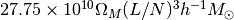
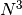
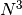

Installation¶
Required dependencies¶
The well-established dependencies are:
- Python 2.7 or 3.4
- scipy, numpy : the foundations for scientific Python
- mpi4py : MPI for Python
- h5py : support for HDF5 files in Python
with a suite of additional tools:
- astropy : a community Python library for astronomy
- pfft-python : a Python binding of pfft, a massively parallel Fast Fourier Transform implementation with pencil domains
- pmesh : a particle mesh framework in Python
- kdcount : pair-counting and friend-of-friend clustering with KD-Tree
- bigfile : a reproducible, massively parallel IO library for hierarchical data
- MP-sort : massively parallel sorting
- sharedmem : in-node parallelism with fork and copy-on-write
Build Instructions¶
The software is designed to be installed with the pip utility like a regular
Python package. Using nbodykit from the source tree is not supported. See Development Mode for details.
The steps listed here are intended for a commodity Linux based cluster (e.g., a Rocks Cluster) or a Linux based workstation / laptop. Please note that there are slight changes to the procedure on systems running a Mac OS X operating system and for Cray super-computers, as explictly noted below in Special notes for Mac and Cray.
Install the main nbodykit package, as well as the external dependencies listed above, into the default Python installation directory with:
git clone http://github.com/bccp/nbodykit
cd nbodykit
# It may take a while to build fftw and pfft.
# Mac and Edison are special, see notes below
pip install -r requirements.txt
pip install -U --force --no-deps .
A different installation directory can be specified via the --user or --root <dir>
options of the pip install command.
The pure-Python nbodykit package (without external dependencies) can be installed by
omitting the -r requirements.txt option, with such an installation only requiring numpy.
Under such circumstances, the functionality of the package is greatly diminished – package behavior
in this instance is not tested and considered undefined.
The dependencies of nbodykit are not fully stable, thus we recommend updating
the external dependencies occassionally via the -U option of pip install.
Also, since nbodykit is not yet stable enough for versioned releases,
--force ensures the current sourced version is installed:
pip install -U -r requirements.txt
pip install -U --force --no-deps .
To confirm that nbodykit is working, we can type, in a interactive Python session:
import nbodykit
print(nbodykit)
import kdcount
print(kdcount)
import pmesh
print(pmesh)
Or try the scripts in the bin directory:
cd bin/
mpirun -n 4 python-mpi nbkit.py -h
Development Mode¶
nbodykit can be installed with the development mode (-e) of pip
pip install -r requirements.txt -e .
In addition to the dependency packages, the ‘development’ installation of nbodykit may require a forced update from time to time:
pip install -U --force --no-deps -e .
It is sometimes required to manually remove the nbodykit directory in
site-packages, if the above command does not appear to update the installation
as expected.
Special notes for Mac and Cray¶
Mac Notes¶
The autotools software is needed on a Mac:
sudo port install autoconf automake libtool
Additionally, on a Mac, the LDSHARED environment variable must be explicitly set. In bash, the installation command is
export LDSHARED="mpicc -bundle -undefined dynamic_lookup -DOMPI_IMPORTS"; pip install -r requirements.txt .
Using recent versions of MacPorts, we also need to tell mpicc to use gcc rather than the default clang
compiler, which doesn’t compile fftw correctly due to the lack of openmp support:
export OMPI_CC=gcc
NERSC Notes¶
We maintain a daily build of nbodykit on NERSC systems that works with the 2.7-anaconda Python module
and uses the python-mpi-bcast helper tool for fast startup of Python. Please see this tutorial
for further details about using python-mpi-bcast for launching of Python applications on NERSC.
Below is an example job script, that runs the friends-of-friends finder (FOF) algorithm and then measures the power spectrum for halos with masses greater than
#! /bin/bash
#SBATCH -n 32
#SBATCH -p debug
#SBATCH -t 10:00
set -x
module load python/2.7-anaconda
source /project/projectdirs/m779/nbodykit/activate.sh
srun -n 16 python-mpi $NBKITBIN FOF <<EOF
nmin: 10
datasource:
plugin: FastPM
path: data/fastpm_1.0000
linklength: 0.2
output: output/fof_ll0.200_1.0000.hdf5
calculate_initial_position: True
EOF
srun -n 16 python-mpi $NBKITBIN FFTPower <<EOF
mode: 2d # 1d or 2d
Nmesh: 256 # size of mesh
# here are the input fields
field:
DataSource:
plugin: FOFGroups
path: output/fof_ll0.200_1.0000.hdf5
m0: 2.27e12 # mass of a particle: use OmegaM * 27.75e10 * BoxSize ** 3/ Ntot
rsd: z # direction of RSD, usually use 'z', the default LOS direction.
# select: Rank < 1000 # Limits to the first 1000 halos for abundance matching or
select: LogMass > 13 # limit to the halos with logMass > 13 (LRGs).
output: output/power_2d_fofgroups.dat # output
EOF
Note that we need to provide the mass of a single particle for the FOFGroups DataSource. The number is , where  is the boxsize in Mpc/h, and
is the boxsize in Mpc/h, and
 is the number of particles per side, such that  is the total number of particles.
is the number of particles per side, such that  is the total number of particles.
Developing on NERSC¶
If you would like to develop the code directly on NERSC (not recommended for the typical user), more installation work is required.
To install nbodykit on a NERSC Cray system (e.g. Edison, Cori), we need to ensure the Python environment is set up to work efficiently on the computing nodes.
If darshan or altd are loaded by default, be sure to unload them before installing, as they tend to interfere with Python:
module unload darshan
module unload altd
and preferentially, use GNU compilers from PrgEnv-gnu
module unload PrgEnv-intel
module unload PrgEnv-cray
module load PrgEnv-gnu
then load the Anaconda Python distribution,
module load python/2.7-anaconda
We will need to set up fast Python start-up on a Cray computer, since the default start-up scales badly with the number of processes. Our preferred method is to use the python-mpi-bcast tool.
Modify the shell profile, and set PYTHONUSERBASE to a unique location. (e.g. a path you have access on /project) for each machine.
For example, this is excertion from the profile of a typical user on NERSC (
.bash_profile.ext), that has access to/project/projectdirs/m779/yfeng1.
if [ "$NERSC_HOST" == "edison" ]; then
export PYTHONUSERBASE=/project/projectdirs/m779/yfeng1/local-edison
fi
if [ "$NERSC_HOST" == "cori" ]; then
export PYTHONUSERBASE=/project/projectdirs/m779/yfeng1/local-cori
fi
export PATH=$PYTHONUSERBASE/bin:$PATH
export LIBRARY_PATH=$PYTHONUSERBASE/lib
export CPATH=$PYTHONUSERBASE/include
- Install nbodykit to your user base with
pip install --user. Also, create a bundle (tarball) of nbodykit. Repeat this step if nbodykit (or any dependency) is updated.
cd nbodykit;
MPICC=cc pip install --user -r requirements $PWD
# enable python-mpi-bcast (On NERSC)
source /project/projectdirs/m779/python-mpi/activate.sh
# create the bundle
MPICC=cc bundle-pip nbodykit.tar.gz -r requirements.txt $PWD